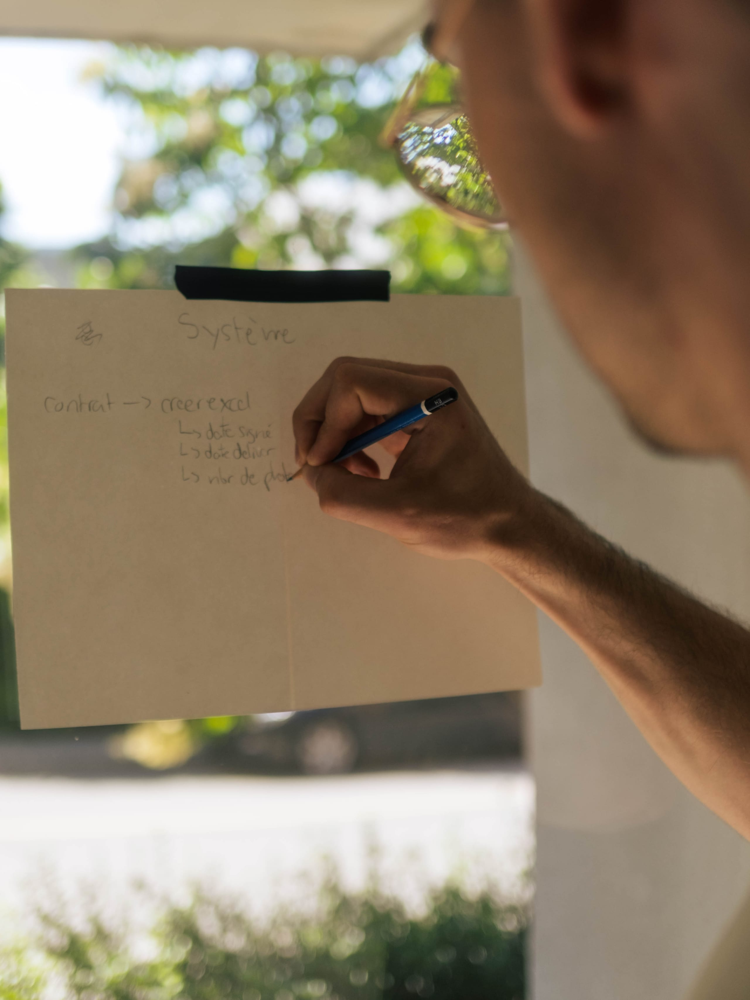
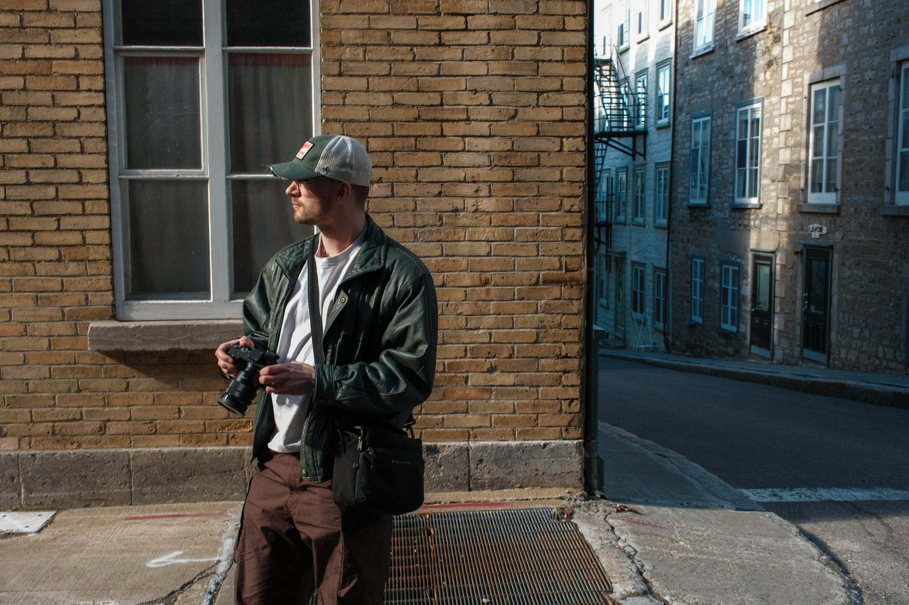

Identité de marque et direction artistique, avec un œil de photographe.
Je m'appelle Guillaume, designer graphique dans la région de Québec. Je fais surtout de l'identité de marque. Je travaille de façon structurée, et mon œil vient beaucoup de la photo.
En 18 mois, j'ai mené cinq mandats clients, en identité, photo, pub 3D et création de contenu. De vrais projets, avec des budgets et des échéanciers réels.
- Expertise
- Identité de marque · Direction artistique · Photographie · Publicité
- Outils
- Photoshop · Figma · Lightroom · Premiere Pro · After Effects · Blender · Claude Code

Mon
approche
Comprendre le vrai problème avant de dessiner.
Je commence par la logique du projet. À quoi il sert, pour qui, avec quelles contraintes. La forme vient après.
Je penche vers l'épuré. Je garde l'essentiel, pour que chaque décision compte.
Un projet qui montre bien ma façon de faire, c'est l'emballage de deux pâtes de fruits pour L'Heure Mauve, une marque de produits à la lavande. J'ai mené toute la direction à partir du positionnement, artisanal avec une touche moderne, pensé comme un cadeau à partager. Une boîte en sections, un logo en forme de coucher de soleil pour rappeler le nom, un traitement un peu folk art pour sortir du générique.
Le défi, c'était de rester simple malgré toute l'information à placer. C'est le genre de contrainte que j'aime.
La photo, c'est d'où me vient mon œil. À force d'en faire, on apprend à regarder ce qu'on garde et ce qu'on laisse de côté. Pour Ciao Totes, ça prenait des images de course en ville, dans un printemps encore gris. J'ai trouvé les lieux, attendu les bons moments, et les photos ont fini dans la campagne.


Ce que
j'apporte
J'apprends vite un nouvel outil.
Je passe d'un logiciel à l'autre selon le mandat. Quand il m'en manque un, je l'apprends.
Pour la pub 3D d'Aki, j'ai appris Blender tout seul pour livrer les animations. Je cherche une équipe où je peux toucher aux idées autant qu'à l'exécution.
Comment
je travaille
Bien comprendre au départ, ça évite les surprises.
Je prends le temps de bien comprendre le projet avant de me lancer. Quand le besoin est clair, on évite bien des allers-retours et des surprises de dernière minute.
Je suis aussi quelqu'un d'ordonné. Mes fichiers sont propres et faciles à reprendre, et je livre ce que j'annonce, quand je l'annonce, sans déborder sur le reste de l'équipe. C'est en travaillant à mon compte que j'ai pris cette habitude.

À jour avec
la technologie
L'IA va vite sur l'exécution. Les choix, c'est moi.
L'IA fait partie de ma façon de travailler. Elle me sert à explorer plus de pistes et à abattre le répétitif, sans décider à ma place. La direction et les choix restent les miens.
Ce site en est un exemple. La direction artistique, la typo et les choix visuels sont de moi. Claude Code a juste accéléré l'exécution.
En dehors
de l'écran
La nature et le sport, c'est là que je vais chercher ma discipline.
En dehors des mandats, je fais surtout de la photo de nature. C'est ma façon de ralentir et de recharger.
J'ai aussi un passé sportif. J'ai fait partie de l'équipe du Québec en snowboardcross, puis j'ai entraîné des athlètes provinciaux. J'en garde de la rigueur, de la constance, et l'habitude d'aider quelqu'un à donner son meilleur. Ça sert autant dans une équipe de création.
Disponible dès maintenant.
Je cherche un poste en agence ou en studio, à Québec ou à distance.